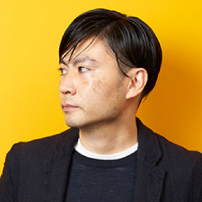
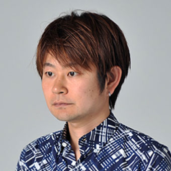
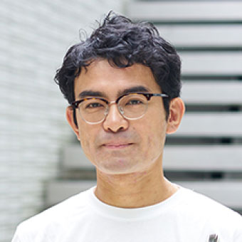

MOTIVATION LAB
モチベーション ラボ
モチベーション・ラボは、各界から「モチベーション」のプロを収集し、2017年9月1日に設立。
フロンテッジ・モチベーション・プロジェクトのエンジンであり、クライアントの課題解決の中心的存在です。
MISSION
- デジタル時代の生活者の動き方を踏まえた課題解決の新しい方法（モチベーション・デザイン）を体系化すること
- さまざまなクライアントの課題に対し、モチベーション・デザイン・メソッド的見地から
解決の方向性をディレクション（示唆）すること - モチベーション・デザインに関するセミナー・勉強会の開催や、研究成果を定期的に発信していくこと
広告、プロモーション領域に限らず、さまざまな世の中のヒット事例からの知見を解析、それに、従来からある「人間の欲求」分析をより現代的に再定義したり、新しいリサーチ方法の導入、行動経済学やコーチングなどの最新の学術的見地からの知見を加味したりすることから、現代のデジタル時代において、生活者が動く仕組み=モチベーションの解明と、それに基づいた、消費行動におけるモチベーション・デザインの体系化を目指すとともに、得られた知見を軸にクライアントの課題解決に当たります。
MEMBER
-

- 小里 玄
- フロンテッジ・モチベーション・ラボ・所長 /
株式会社フロンテッジ
エグゼクティブプランニングディレクター
-
- 間宮 洋介
- フロンテッジ・モチベーション・プロジェクト・リーダー /
ストラテジスト
-
- 小俣 貴宣
- Ph.D. /
ソニー株式会社
コグニティブサイエンティスト
-
- 中村 貞裕
- 株式会社トランジットジェネラルオフィス 代表取締役社長
-

- 朴 正義
- 株式会社バスキュール
代表取締役社長
クリエイティブディレクター
-

- 森口 哲平
- 株式会社電通
XDS（エクスペリエンス・デザイン・スタジオ）リーダー
-
- 吉岡 慎二
- 株式会社電通マクロミルインサイト
リサーチ・ディレクター
-

- 上島 史朗
- 株式会社フロンテッジ
シニアクリエイティブディレクター
-
- 岡里 泰之
- 株式会社フロンテッジ
シニアプロデューサー
-
- 島田 浩太郎
- 株式会社フロンテッジ
エグゼクティブクリエイティブディレクター
-
- 丸木 理恵
- 株式会社フロンテッジ
シニアアカウントプロデューサー